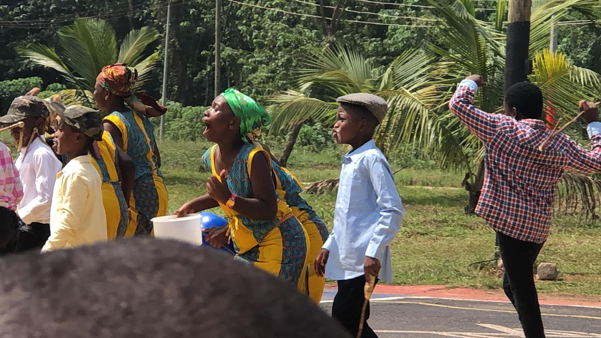

Newsite – Atwima Takyiman
Kumasi, Ghana
Ask about this campusAbout WAG
WAG Angels Academy is a basic school serving children and families in Kumasi, Ghana.
Our approach
School is more than lessons and examinations. It is also where children practise responsibility, learn to work with others and discover what they can do.
At WAG Angels Academy, we aim to provide a supportive learning environment and to keep families informed as children progress through early years, primary and junior high.
We value respect, effort, honesty and care for others. These values guide how we learn and how we treat one another.
Where to find us
Contact the school to confirm which campus serves the class or programme you are asking about.
Kumasi, Ghana
Ask about this campusKumasi, Ghana
Ask about this campus
School life
See a selection of photographs from activities and occasions at the school.
View school photos